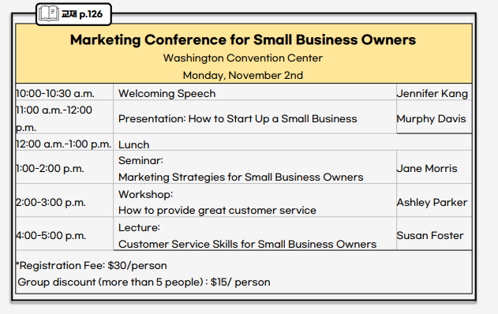
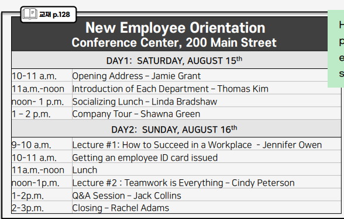
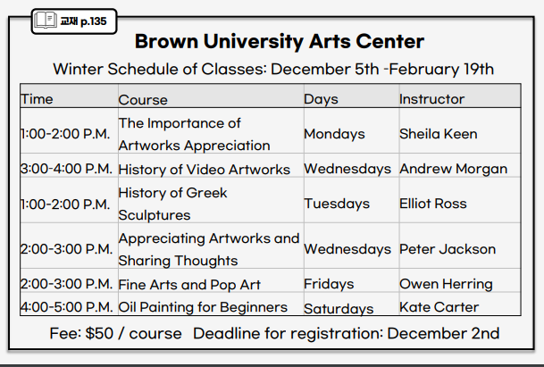
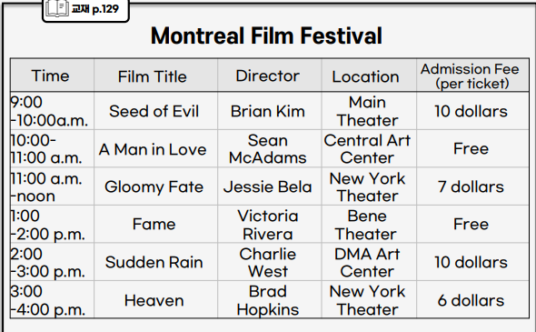
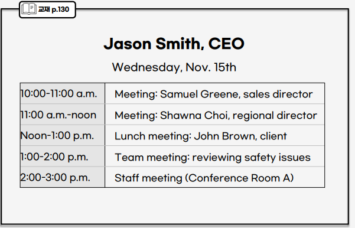
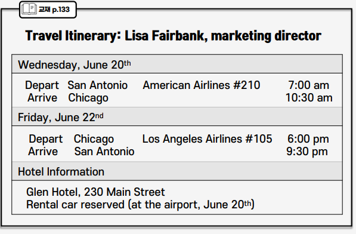
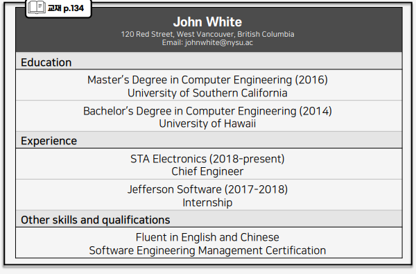
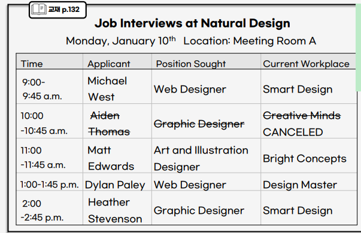

0. Intro
표 읽는시간 45초, 답변 준비시간 문항당 3초
10 번을 제외하고 전부 1회 청취가능
답변시간 : 8, 9번 \(\to\) 15초, 10번 \(\to\) 30초
1. 만점전략
(1) 표 읽는 시간
전반적인 내용
중요한 부분(반복적 키워드)
특이사항
유형별 중요한 포인트
(2) 고정된 템플릿
- 동일한 표현을 썼더라도 문제에 대한 정확한 답변을 했을때 고득점을 받음!`
(3) 듣기 잘 듣는 법
- 파트 4는 유사한 패턴이 반족 출제 되므로 문제를 예측해서 키워드를 캐치하자!
- 듣기 문제 예측방법
표가 힌트다 \(\to\) 표가 계속 화면에 떠있음
의문사를 잘듣자 \(\to\) 8번 문제의 경우 시간, 날짜, 장소, 금액 등 고정적으로 묻는 문제들이 출제됨
키워드 듣기 \(\to\) 9, 10번의 경우, 표에 나와있는 키워드를 언급을 한다면 그 부분이 정답이 되는 경우가 많음
(4) 유형별 정리
일정표
개인 일정표
이력서
면접 일정표
수업 시간표
2. 기초 이론 다지기
- 참고영상
(1) 날짜, 숫자, 시간
A. 서수 읽기
- 날짜는 ’서수’로 읽는다. ‘숫자 + th’
- 나머지는 교재 보고 읽기 연습
B. 전치사 사용
1. 시간
- on + 날짜/요일
- At + 시각
- in + 월/계절
- From A to B
2. 장소
- At : 특정 장소
- in : 방안(실내장소), 도시, 나라
- On : 층, 거리명, 교통편
3. 기타
by/with + 사람
- by : 그 사람에 의해서 진행되거나 이끌어 지는 경우
- with : 그 사람이 진행 하거나 진행하지는 않지만, 그 사람과 함께 하는 경우
on/about + 주제 : 둘의 딱히 구별은 없음
from + 소속
the, as + (a) 직책
- as는 이력서 유형에서 경력을 말할 때!
3. 템플릿
일정표 템플릿
Question 8
- It will be held + 시간/장소 = it wiil take place + 시간/장소
- It will start at 시간/장소 = It will begin at 시간/장소
- It will finish at 시각
Question 9
- No, I’m afraid that you have the wrong information, Actually, + 맞는정보
- 시간이 부족하다면 “No, Actually, 맞는정보~~” 로 가자.
Question 10
- There are ___ session. First, Next, Finally, there is 일정 on 주제 by 사람
set 1
- 교재 126

- Q8. when and where is it scheduled to take place?
- Answer
It will be held on Monday, November 2nd, at Washington Convention Center
- Q8-1. On what date does the conference take place and what time does it start?
- Answer
It will be held on Monday, November 2nd and it will start at 10 a.m
- Q8-2
How much is the registration fee per person if I”m going with five other people?
- Answer
It’s 15 dollars per person because you can get a group discount
- Q9. I’m going with some other people. so will be a group of six people. Can we get a group discount? and, if so, how much is the discounted registration fee per person?
- Answer
Yes, you can get a group discount, and it’s 15 dollars per person.
- Q9-1. I heard that Murphy davis will give a presentation in the aftenoon is that right?
- answer
No. I’m afraid that you have the wrong information. Actually Murphy Davis will give a presentation at 11 am.
- Q9-2. I was told that there will be a seminar by jane Morris at 1 p.m. Can you confirm that?
- answer
No, actually, there was supposed to be a seminar by Jane Morris, but it has been cancled.
- Q9-3. I’m afraid I’ll have to leave after 4 p.m. Will I miss anything?
- answer
Yes, from 4 to 5 p.m, there is a lecture on Customer Service Skills for Small Business Owners by Susan Foster
- Q10. I’m looking forward to sessions that deal with customer service. Could you give me all the details of the sessions related to customer service?
- answer
Sure. First, at 2 p.m. there is a workshop on how to provide great customer service by Ashley Parker. Next, at 4 p.m, there is a lecture on customer service skills for small business owners by Susan Poster
- Q10-1. I want to know about the details of the sessions that deal with customer service. Can you tell me about them?
- answer
Sure. First, at 2 p.m. there is a workshop on how to provide great customer service by Ashley Parker. Next, at 4 p.m, there is a lecture on customer service skills for small business owners by Susan Poster
set 3
- 교재 128

- Q8. When is the first day of the orientation, and what is the first thing on the schedule?
- answer
Saturday, August 15th, is the first day of the orientaton. and the first thing on the schedule is an opening address at 10 a.m
- Q9. I heard that there will be a company tour in the morning. Am I right?
- answer
No. I’m afraid that you have the wrong information. actually, the company tour will be held at 1 p.m
- Q10, Someone told me that I would find the lectures particularly helpful. Can you give me all the details of the lectures offered at the orientation?
- answer
Sure, There are two lectures on Sunday. First, at 9 am. there is a lecture on how to succeed in a workplace by jennifer owen. Then, at noon, there is a lecture on Teamwork is Everything by Cindy Peterson
수업시간표
템플릿1. 금액, 등록
- You have to pay 금액 for 강좌
- it’s 숫지 dollars.
-You should register(=sign up) by 등록 마감일
- If you V, it’s ~dollars
- It’s free
- It’s for beginners/intermediate students/advanced students.
템플릿 2. 수업 소개
- There is a 과목명 class/course
- 강사 will teach 과목명 class/coures
- There is a class on 주제
- 강사 will teach a class on 주제
set 10
- 교재 135

- Q8. How much is the fee per course, and when is the deadline for registration?
- answer
It’s 50 dollars per course, you have to register by December 2nd.
-Q9. I heared that Elliot Ross will be teaching History of video Artwork. Can you confirm that?
- answer
No. I’m afraid that you have wrong information. actually, Andrew Morgan will teach history of video Artworks.
- Q10. I’m busy with my work these days. so I only have time on mondays and saturdays. Can you tell me all the details of the classes scheduled on mondays and saturdays?
- answer
Sure. First, on mondays, there is a class on the importance of artworks appreciation(어프리쉬에이션) by Shellakeen from 1 to 2 pm. Next, on Saturdays. there is an oil painting for beginners by kate carter from 4 to 5 pm.
Set 4
- 가끔 출제되는 유형

- Q8. What time does the first movie start, and what is the title of the movie?
- answer
It will be held at 9 am. and the title of the movie is Seed of Evil
- Q9. I’m a big fan of Sean Adams. and I want to watch his movie. A man in Love. I heard that the fee is 10 dollars per ticket. Is that right?
- answer
No, actually, it’s a free. So you don’t have to pay for the ticket.
- Q10. Could you tell me about all the screenings being held in the New york Theater?
- answer
There are two films. First, at 11 am, there is Gloomy Fate. it’s 7 dollars per ticket. Next, at 3 p.m, there is Heaven. It’s 6 dollars per ticket.
개인일정표
템플릿 1. ~ 할것이다
- You will depart from 출발지
- You will arrive in 도착지
- You will take 교통편
- You will stay at 숙소
- You will have lunch/ dinner/ a meeting.
- You will give a sppech/ a lecture/ a presentation
템플릿 2. 취소/ 연기 일정 변경
-There was supposed to (비 서포스투) be 일정, but it has been canceled.
- There was supposeed to be 일정, but it has been postponed.
- There was supposed to be 일정 but it has been rescheduled to 바뀐날짜
- 시간이 부족할 땐 It has been canceled/postponed/recheduled to 바뀐날짜만 쓸 수 있다.
set 5

- Q8. What time will the team meeting take place. and what we be discussing?
- answer
it will be held at 1 pm. and the topic will be reviewing safety issues
-Q9. I’m planning to have a lunch appointment with my friend at noon. Would that be posssible?
- answer
No, Actually it’s not possible, You have a lunch meeting with your clients, John Brown
- Q9-1. As far as I know. I’m supposd to attend a staff meeting in the morning. Can you confirm that?
- answer
No, actually, There is a staff meeting at 2 pm
- Q10.I want to know about the things I have to do before noon. Can you tell me all the items scheduled before noon?
- answer
Yes, First, at 10 am, there is a meeting with samuel Greene, sales director, next, at 11 am, there is a meeting with Shawna choi, regional(리지너) director.
set 8

- Q8. Which hotel wiil I be staying at, and what time do I arrive in Chicago on Wednesday, June 20th?
- answer
You wiil stay at Glen Hotel, and You will arrive in Chicago at 10:30 am. on wednesday.
- Q9. When I arrive in Chicao, do **I have to take a taxi to get to the hotel?
- answer
No. You don’t have to, Actually, a rental car will be reserved at the airport on June 20th.
- Q10. Can You tell me all the details of my schedule on Friday, June 22nd?
- answer
Sure. First, you will depart from Chicago at 6 pm on Friday. You will take Los Angeles airlines. The flight number is 105,
Next, You will arrive in San Antonio at 9:30 pm on Friday.
이력서
템플릿 1. 학력
- He got a bachelor’s(배칠러스) degree/master’s degree in 전공 from 학교 in 년도
템플릿 2. 경력
- From 시작일 to 종료일, He worked at 회사명 as 직책
- From 시작일 up to now, He has worked at 회사명 as 직책
템플릿 3. 기타 능력
- I think he is qualified because ~
- he is fluent in 언어명
- He is certified(설디파이드) in 자격
- he has a certificate(설티피킷).
- he has experience in 분야
set 9

- Q8. What school did he get his master’s degree from, and what was his major?
- answer
he got a master’s degree in computer enginering from the university of southern california in 2016.
- Q9. I’d like to hire an applicant who understands software enginerring management. Do you think he is a qualified applicant?
- answer
Yes. I think he is qualified because he is certified in software engineering management.
- Q9-1. We are planning to work with Chinese companies next year and I want to hire an employee who can help us with that project. Is he qualified?
- answer
Yes, I think he is qualified because he is fluent in Chinese.
- Q10, we want to hire a highly experienced employee. What details can you tell me about his work experience?
- answer
Yes, First, from 2017 to 2018, he woaked at Jefferson Software as an intern, Next, from 2018 until now, he has worked at STA Eletronics as Chief Engineer.
면접일정표
템플릿 1. 면접일정
- You will interview 사람.
- there is an interview with 사람 from 회사명 (Who is applying for 직책).
- he has 5 years of experience.
- he is applying for editor position.
set 7

- Q8. What date will the job interview be held, and where are they being held?
- answer
It will be held on Monday, january 10th, and they will be held in metting room A
- Q8-1. What time does the first inteview start and who am I interviewing?
- answer
The first interview will start at 9 am. and you will interview Michael West from Smart Design.
- Q9. I’m afraid that I have an urgent video conference with my client at 10 am. Would it be a problem?
- answer
Fortuately(폴츄널리), there was supposed to be an interview with Aiden Thomas. but it has ben canceled. (So, it wouldn’t be a problem at all.)
- Q9-1. I know that I’m supposed to have an interview with aiden thomas from creative minds. Am I right?
- answer
No, actually, there was supposed to be an interview with Aiden Thomas. but it has ben canceled.
- Q10. Can you give me all the details of applicants who are currently working at Smart Design?
- answer
There are two applicants(어플리컨츠). First, at 9 am. there is an interview with Michael West. he is applying for web designer position. next, at 2 pm, there is an interview with Heater Stevenson. he is applying for Graphic Designer position.
- Q10-1. Can you tell me about the details of the applicants who are applying for a web designer posution?
- answer
There are two applicants. First, at 9 am. there is an interview with Michael West from Smart Design. Next, at 1 pm. there is an interview with Dylan Paley Desi from gn Master.
복기
set3, set4 처럼 예상치 못한 질문
set5 \(\to\) 사람이름, the + 직책
set7 \(\to\) 주제 명사 복수인지, 단수인지 확인(다시 풀자..)